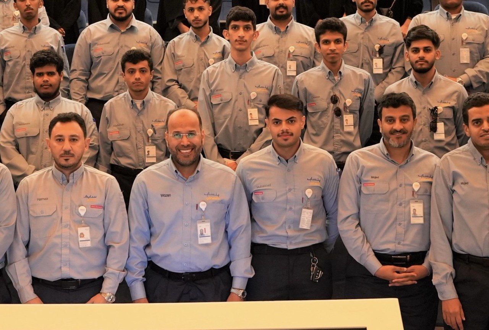
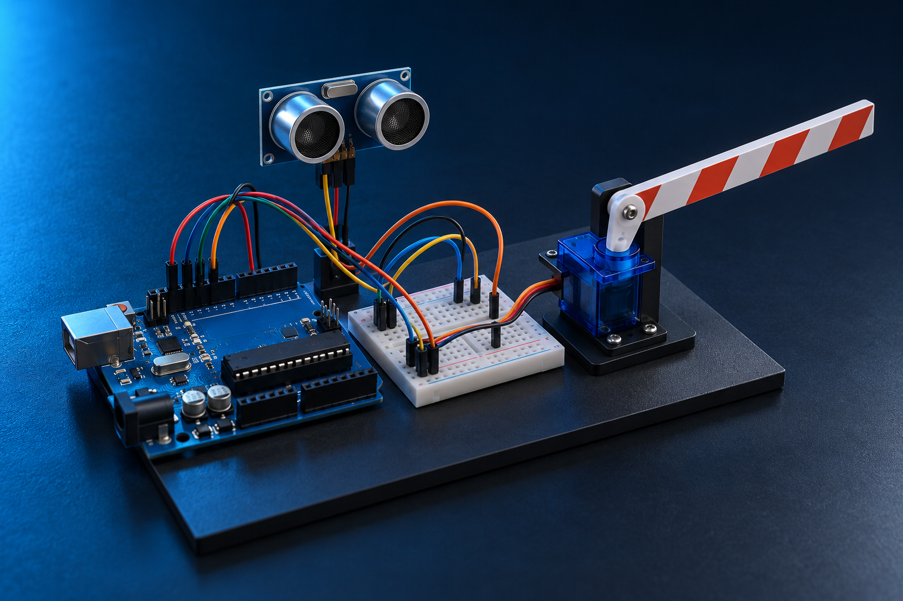
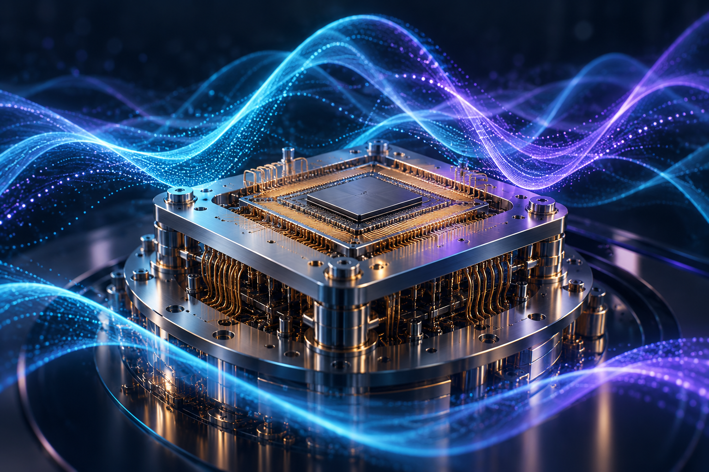

ABOUT ME
Muhannad Yahya Alzahrani
Computer Engineer · Networking & Cybersecurity
I’m Muhannad Yahya Alzahrani, a Computer Engineering graduate from Yanbu Industrial College. My hands-on experience at YANSAB, a SABIC affiliate, includes industrial networking, secure configuration, connectivity verification, and technical documentation. I combine practical engineering skills with team leadership and clear technical communication.
ENGINEERING PORTFOLIO
Ideas explored.
Engineering explained.
I’m Muhannad Alzahrani, a Computer Engineer with practical experience in industrial networking and cybersecurity. Explore the problems I worked on, my contribution, and why each project matters.
Explore projectsFEATURED GRADUATION PROJECT
Analyzer Workstations Cybersecurity Enhancement
Helping important industrial computers communicate through a secure, organized network. My contribution covered configuration, installation support, verification, and documentation.
Explore the graduation projectConfidentiality respected: the image and project explanation use educational analogies, not actual SABIC/YANSAB facilities or systems.
ACADEMIC PROJECTS
Enterprise Multi-Branch
Network Design & Implementation
A simulated company network that lets three offices share services while keeping department access organized.
Explore projectSmart Enterprise
User Permissions
A model that decides who can open a company resource, using the person’s role and the circumstances of the request.
Explore project
Automatic Smart
Parking Gate System
A small working barrier that detects an approaching object and opens automatically.
Explore projectCPU Scheduling
Algorithms
Two ways a computer chooses which waiting task receives processor time next.
Explore project
The Quantum
Revolution
Research explaining what quantum computing could do, where it may help, and what limits it.
Explore projectCover images are AI-generated concepts. Project pages contain original evidence and illustrative examples.